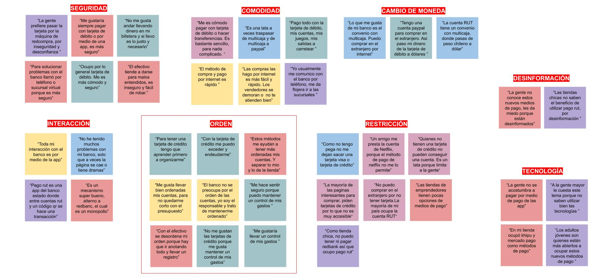
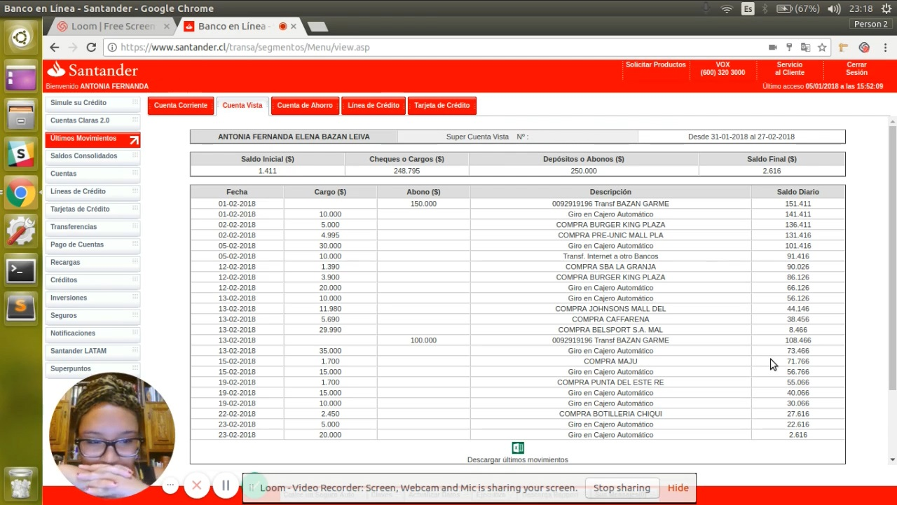
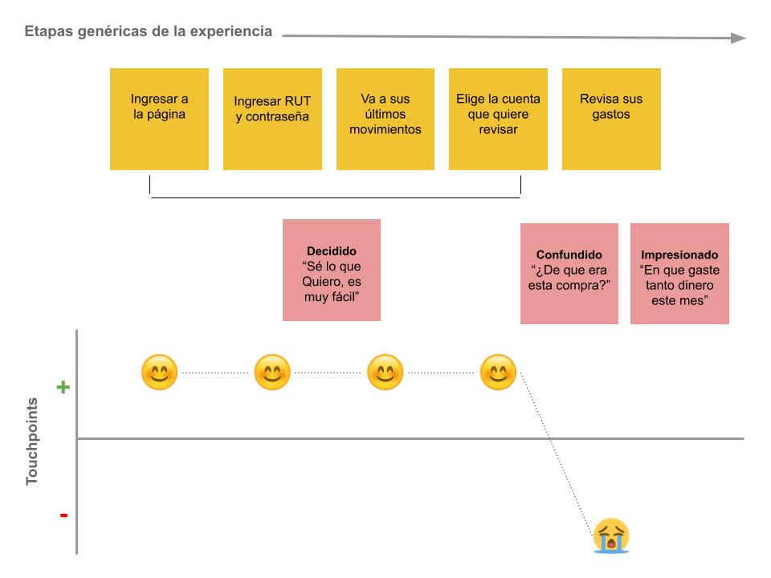

2
SINTESIS Y DEFINICIÓN
Diagrama de afinidad
Ordenamos por categorías las respuestas de las entrevistas para sintetizar y analizarlas. Gracias al diagrama de afinidad, logramos enfocarnos en uno de las categorías más nombradas: orden, ya que como insight, descubrimos que los usuarios buscan y quieren mantener un orden de sus cuentas para no endeudar, sin embargo no llevan un control de sus gastos.
Usuario primario - Javiera

Testing Video
Realizamos un testing de vídeo a través de la herramienta Loom, a dos usuarios les pedimos de tarea que vieran su último movimiento y que nos informaran sobre que era. Observamos a los usuarios no supieron responder de inmediato en que habían utilizados sus últimos movimientos y que sería de gran ayuda poder ordenar esta información para tener un control y orden de sus cuentas. Realizamos un Customer Journey map para conocer los puntos críticos del testeo.
User Journey Map
Se realizó un mapa de viaje, para identificar los puntos críticos de los usuarios en las diferentes etapas de cuando quieren revisar sus ultimos movimientos.
Problem Statement
Luego de tres testimonios claves:
- “Para tener una tarjeta de crédito tengo que aprender primero a organizarse”
- “Trato de llevar bien ordenadas mis cuentas, para no quedarme corto con el presupuesto del mes”
- “Me gustaría mantener un control de mis gastos”
Y descubrir el Pain Point Principal:
Las personas no recuerdan exactamente de qué son
las
operaciones bancarias que realizaron hace unas semanas e incluso días; llegamos a la conclusión
de que Javiera
necesita mantener un orden de sus gastos para entender en qué gasta su dinero.
Cómo podríamos... (HMW)
- ¿Cómo podríamos hacer que Javiera sienta que tiene un control de sus gatos?
- ¿Cómo podríamos hacer que Javiera pueda recordar los movimientos que ha hecho con su tarjeta bancaria?
- ¿Cómo podríamos hacer que Javiera se informe de cuáles son sus mayores gastos mensualmente?